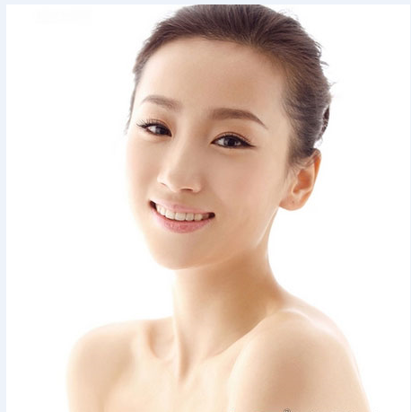

联系方式
YY有限公司
手机：123456789
QQ :6666688888
联系人：张先生
北京市
手机：123456789
QQ :6666688888
联系人：张先生
北京市
淡妆
首先，选择一套颜色和自己肤色相近的化妆品。然后就是眉毛、腮红、眼线、眼影、睫毛膏、唇彩。如果要达到好的淡妆效果，除唇彩睫毛膏之外只能任选其其一做详细刻画，其余从简。比如说，眉毛画了，腮红就要淡，眼影用淡色系的，唇彩用珠光的。根据当天的天气、亮度等特制选择描画不同的重点。
 日常一般选用腮红、眉毛为重点。约会聚会可以以眼影为中心。掌握好这几点，淡状就没有问题了。
淡状——详细方法
底妆：擦粉底
有些人细致的化过妆却看不出已化了妆，又有些人只拍了一点儿粉就好像是浓妆艳抹过似的。其中原因是出在擦粉底的过程上——最高明的涂粉方法得注意两点：一是不用海绵；一是把适量的粉膏就像擦乳液那样大胆地涂在脸上后，再小心地拍打的脸，尤其是眼睛、鼻子、嘴的四周。越是行家越对这一步骤不能马虎，了草从事。
画眉
擦好了粉底再来画眉了。首先将眉毛分为三等分，把离眉头三分之一处定为眉毛的最 高处，然后一笔一笔的化出一道具有理想弧度的眉毛来，这种线条的眉毛不但看起来自然，而且给人一种不土气的感觉，也就是说它能使人显得聪明，富有城市派的气氛。